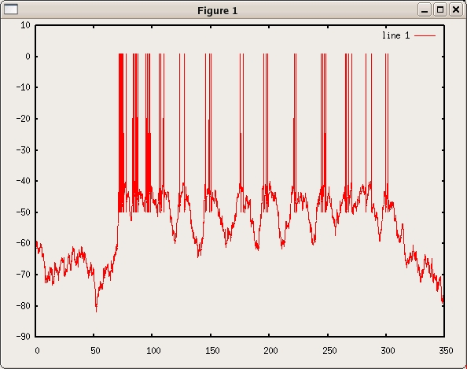

These simulations reproduce the model in Jing Shao, Dihui Lai, Ulrike Meyer, Harald Luksch, and Ralf Wessel, Generating oscillatory bursts from a network of regular spiking neurons without inhibition. Journal of Computational Neuroscience, The code is written in standard C++ by Dihui Lai. Questions on using the code should be addressed to dlai@artsci.wustl.edu The author has tested the code in compiler 'Xcode' under MAC and 'Microsoft Visual C++ 2008 Express Edition' in Windows XP. Example Use (in Xcode): launch the X code program File->New Project->choose C++ tool->add the header files and cpp files into the project->Build and Go The program will generate 9 txt files, put them in the same folder with the Matlab file rasterplot2.m and vplot.m. In Matlab, use rasterplot2 to generate a raster plot of the model neurons activity and use vplot to see the voltage trace of the center neuron in Ipc. Parameter Scan: Uncomment the code for parameter scan in the file ParSearch.cpp and run the program again. As an illustration, I put the complete data in the folder ParameterScan. Each sub-folder correspond to a different parameter scan. Run the scoreimg.m in Matlab. --- The code can also be compiled and run under linux with the following: g++ -lm `ls *.cpp` -o run ./run then running vplot.m under octave you can generate the following plot: 